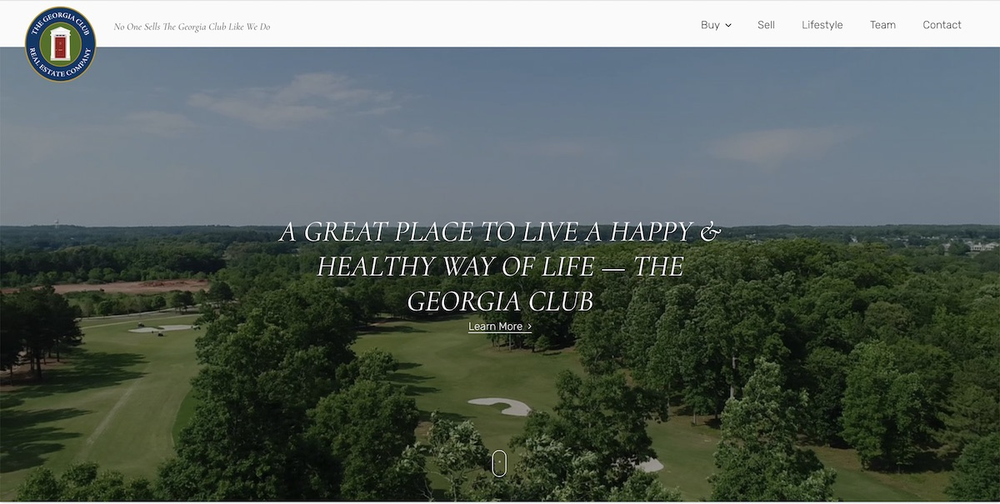
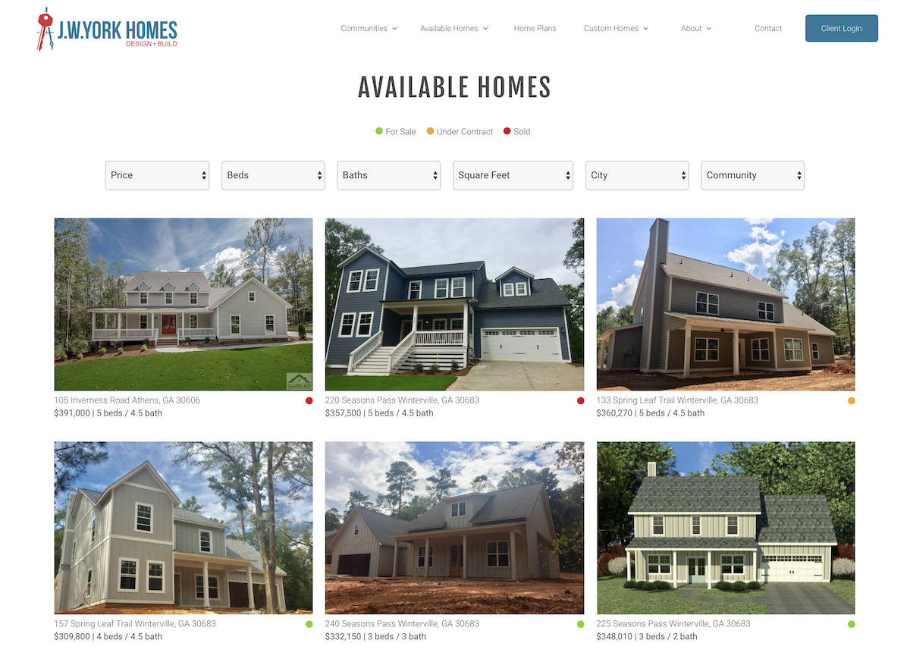
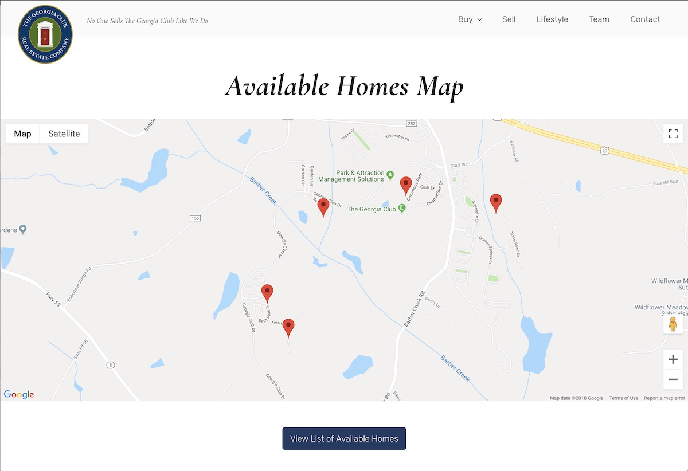
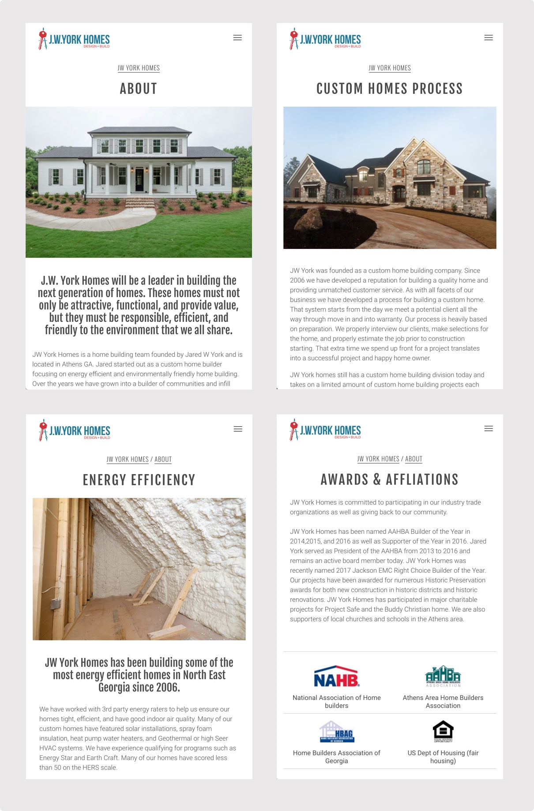

In 2018, I launched three real estate websites.
1. Winterville Station (launched March 2018)

Niche website for a community in Winterville, Ga. All homes were planned, designed and built by JW York Homes
2. The Georgia Club Real Estate Company (launched October 2018) 
The Georgia Club is a private country club that has many unique neighborhoods. The Georgia Club Real Estate Company has specialized in selling Georgia Club homes for almost twenty years.
3. JW York Homes (launched December 2018)

After I build Winterville Station’s website, JW York Homes recognized their primary website needed a redesign as well. JW York Homes features their spec homes for communities they’ve developed, as well as custom homes they’ve designed and built for clients.
After designing and building multiple real estate websites, I’ve learned what’s essential for a great real estate website.
1. Advanced Search feature

When building a real estate website, you need to think about the popular features of home searching apps, like Zillow. One main feature is advanced search, which allows users to filter properties based on multiple criteria, such as price, bedrooms, baths, square feet. Prospective home buyers have a lot of deal breaker criteria, so narrowing down the properties to what they want is key to keeping them on your site. To achieve this advanced search feature, I used the Advanced Search & Filter Pro plugin.
2. Available Homes Map

Another feature of popular home searching apps, like Zillow, is the option to view properties in a map view. Location is a top priority for many home buyers, and they don’t want to enter the address of each home into google maps to see which has the best location.
3. Strategic design for individual ‘available home’ page

A property can have an immense amount of information. Dozens of images, a 200+ word description and an endless amount of details such as bedrooms, bathrooms, square feet, garage, school districts, etc. You don’t want to overwhelm the user with all this information. Rather, you want to organize the page where the user can access the most important information immediately. For the real estate websites I’ve built, I’ve organized the individual ‘available home’ page as follows:
- large image of the exterior
- upgraded features
- home details
- additional images that open to lightbox slideshow gallery
- location google map
- additional information
4. Promote the quality and lifestyle that comes with your properties and communities

If someone has left the larger house listing websites to do further research on your real estate website, it’s likely because the user wants to know who they are buying from and what they are buying into. For most, it’s to learn what makes your home construction and design unique. Do you include environmentally friendly features in your home builds? Do your neighborhoods include nature trails? Do you provide custom design options for your spec homes? These are the kind of details that home buyers want to know about, and you should include this information in your website.
This can be achieved through adding basic pages to your site that give additional information about your team, process and quality. These basic pages are inexpensive for your website designer/developer to put together for you, but could ultimately be the reason why prospective home owners reach out to you about one of your homes!
I think with these four elements you can have a successful and informative real estate website. I love building real estate websites because they provide the fun challenge of taking a lot of information and displaying it in an attractive and digestible way. Also, real estate is a personal hobby of mine because I’m obsessed with architecture and design. Are you in need of web design and development for your real estate business? Please get in touch with me!